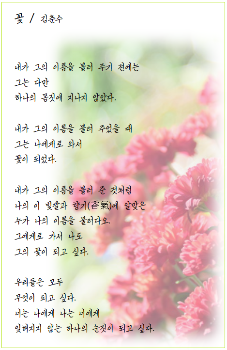

MY BLOG
Welcome to the blog of 최병채


가족 소개
최근 수정 시간, April 7, 2021
제가 사랑하는 저의 가족 구성원은 부모님과 형, 이렇게 4인 가족입니다. 아버지는 1969년 5월 9일생이고 익산출신 입니다. 어머니는 1971년 2월 20일생이고 태안출신 입니다. 아버지는 대학시절 가족을 위해 직업군인을 선택하셨고, 태안에 근무하던 시절 어머니를 만나 사랑에 빠지셨다고 하십니다.
이름 | 최병채 |
국적 | 대한민국 |
본관 | 전주 최씨 |
출생 | 부산광역시, 1998년 6월 3일 |
학력 | 신월초등학교(졸업) 화원중학교(졸업) 화곡고등학교(졸업) 세종대학교(재학) |
신체 | 170cm, 70Kg, B형 |
종교 | 무교 |
가족 | 아버지, 어머니, 형 |
오늘의 시
소개
1998년 부산에서 태어난 최병채 입니다. 현재 세종대학교 컴퓨터공학과 학생이며, 17사단 307포병대대 병장 만기전역 했습니다.
희망직업은 없고 꿈은 모두가 행복한 세상을 만드는 것과 우주정복입니다.
좋아하는 언어는 따로 없으며 요즘 파이썬이 계속 유혹하는게 너무 끌립니다.
취미와 좋아하는것은 생각에 잠기는것입니다. 깊은 생각에 잠길 때 비로소 진정한 나 자신을 알아갈 수 있는것 같습니다.
또한 누구를 가르치는것도 매우 좋아합니다. 원래 목표가 선생님이였기 때문입니다.
목표
이번 웹프로그래밍 수업으로 배워가고 싶은것은 무엇보다 저만의 사이트를 만들어보고 싶습니다. 구체적으로 어떤 목적의 사이트를 만들지는 아직 결정하지 못했지만, 앞으로 더 생각해볼 생각입니다. 제 인생의 목표는 좋은 사람이 되는 것입니다. 남에게 상처주지 않고, 남부끄럽지 않게 사는것이 목표입니다.